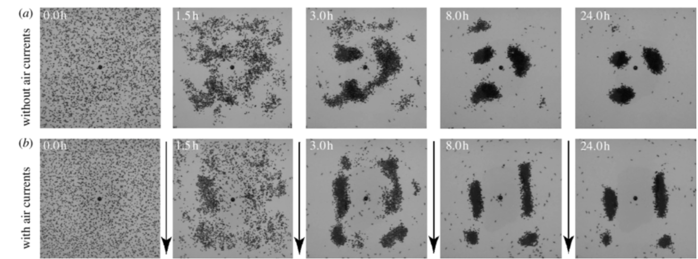

Dans le premier elles sont vivantes.

Dans le second cas elles sont mortes.

Dans le dernier cas elles sont vivantes mais elles portent une fourmi morte.

Dans le cadre de notre ARE nous avons choisi de porter notre étude sur le comportement des fourmis. Plus particulièrement nous allons nous intéresser à la manière dont les fourmis agrègent leur cadavre. En effet on constate que dans la nature les fourmis ont tendance à réunir leur cadavre en vastes tas réguliers dans l'espace. Ce phénomène est observable à l'intérieur ou à l'extérieur des fourmilières (dans le cas des fourmilières, une pièce de la fourmilière est spécialement dédiée au rassemblement des cadavres de fourmis).
Après le décès d’une fourmi celle-ci dégage une substance chimique. Cette substance une fois libéree dans l’air attire les autres fourmis. Celles-ci on alors une réaction qu’on peut qualifier de mécanique. En effet une fois que ce signal chimique est émis dans l’air une fourmi aux alentours se saisit du cadavre afin de l’emmener directement sur un tas qui peut s’apparenter à nos cimetières. C’est à ce phénomène que nous allons nous intéresser dans notre étude. Les images suivantes illustrent parfaitement le phénomène.
Ainsi nous avons décidé de modéliser ce phénomène et de d'implémenter notre modélisation en utilisant le langage Python. Pour aboutir à des résultats intéressants, nous avons décidé de présenter plusieurs modèles ayant chacun leur avantage et leur inconvénient et de les confronter entre eux.
Dans tous les cas nos fourmis peuvent être dans trois états distincts:
Dans le premier elles sont vivantes.
Dans le second cas elles sont mortes.
Dans le dernier cas elles sont vivantes mais elles portent une fourmi morte.
Ce modèle propose de modéliser le comportement des fourmis. Ainsi ce modèle prend en compte différentes conditions. On suppose tout d’abord que les fourmis n’ont pas de mémoire ainsi elles peuvent transporter plusieurs fois le même corps et elle le dépose dès qu’elle détecte la présence d’un autre corps dans les environs. La fourmi ne prend en compte que la présence d'autres fourmis dans son voisinage afin de prendre une décision donc aucune probabilité n'est définie. De plus dans ce modèle la fourmi à la possibilité de se déplacer dans 8 directions de manière aléatoire néanmoins la fourmi ne peut pas marcher sur un obstacle, ainsi elle ne peut pas marcher sur une fourmi morte ou vivante.
Néanmoins dans ce modèle on constate que les fourmis ont du mal à former des tas de cadavres et qu’elles peuvent se retrouver coincées entre des corps ce qui pose problème dans le programme.
Toujours dans le but de décrire et simuler informatiquement le phénomène qui nous intéresse, nous avons implémeneter un autre modèle : celui de Deneubourg. Néanmoins on constate des différences entre les deux modèles. En effet on peut noter que dans le modèle de Deneubourg les fourmis ont la possibilité de se déplacer dans 4 directions différentes et elles peuvent également marcher sur les cadavres de fourmis (mais pas sur les autres fourmis vivantes).
Il est également important de souligner que dans le modèle d’Unige les fourmis ne possèdent pas de mémoire alors que dans le modèle de Deneubourg elles en possèdent possède une. En effet on définit une probabilité Pp qu’une fourmi ramasse une fourmi morte et la porte. On définit également Pd la probabilité qu’une fourmi portant un corps, le dépose.
On note :
Avec k1 et k2 deux paramètres de modèle et f est la proportion de cadavre de fourmis rencontrées durant les N dernières itérations.
On définit f comme étant la somme de tous M(i) d'une fourmi pour :
On constate dans ce modèle, le système évolue comme nous le souhaitions en effet on peut observer au bout d’un certain laps de temps que des tas se forme et que les fourmis parvienne donc bien a créé une forme de cimetière.